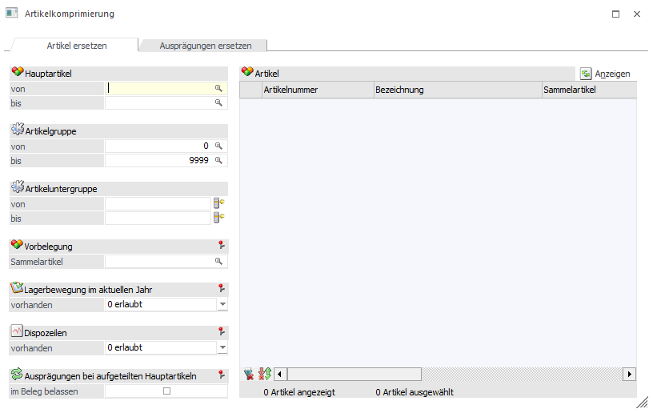

Um einen schnelleren Zugriff auf Ihren Datenstand sicherzustellen, sollten Sie regelmäßig Ihre Daten pflegen. Dabei können inaktive Artikel, die bereits bebucht wurden und in Belegen vorkommen, aus dem Datenstand entfernt werden und ein effektiveres Arbeiten gewährleistet werden.
Dafür steht uns der Menüpunkt "Artikelkomprimierung" zur Verfügung. Dieser kann über…
1 WinLine FAKT
1 Stammdaten
1 Artikelstamm
1 Artikelkomprimierung
… aufgerufen werden.

Es gibt 2 Register:
ü Artikel ersetzen
ü Ausprägungen ersetzen